Angular Element 的使用情境是什麼? 關於這個問題的答案有很多，在去年年初(2018/2) Angular 團隊的 Rob 在 歐洲一場 SharePoint 的活動內介紹了這一段， 影片，SharePoint 這產品在台灣除了一些大公司或是老公司中還可以看到外，基本上很難在聽到他的名字，可是在國外，SharePoint 還是有很多使用者的。而 WebPart 允許我們使用不同的技術 + sharepoint 提供的 sdk 來做畫面顯示及資料串接。
當然我們也可以使用 HTML + CSS + JavaScript 才做到這件事情，而有一群使用 SharePoint 的社群推出一套基於 @microsoft/generator-sharepoint 的 yeoman ，擴充出來的另外一個 SharePoint 套件，@pnp/generator-spfx，這一個產生器內支援了 Angular / Vue / React 等前端框架，裡用這些框架來開發 SharePoint 的 WebPart / extendsion / library 等，這一篇筆記就是來記錄如何使用 @pnp/generator-spfx 來建立第一個 Angular Element as WebPart in SharePoint
環境要求
- node 版本: 10.x 版 。很重要， 目前
@microsoft/generator-sharepoint還不支援 Node 12.x 版，會在node-sass的地方壞掉 yeoman套件gulp工具Angular CLI版本: 6、7、8，但這邊我們可以手動修改讓他支援 9 版
工具安裝
1 | npm i -g yo gulp @pnp/generator-spfx |
這邊假設以經安裝過 @angular/cli 了
建立專案
-
建立一個空的資料夾並進入到該資料夾
-
執行
yo指令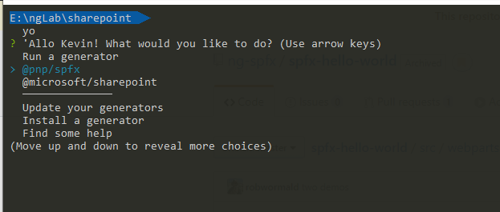
-
選擇
@pnp/spfx產生器 -
選擇要建立的範本，這邊先選取
SharePoint Online only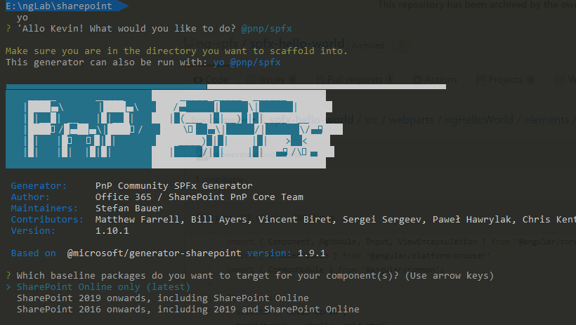
-
選擇要使用的前端框架
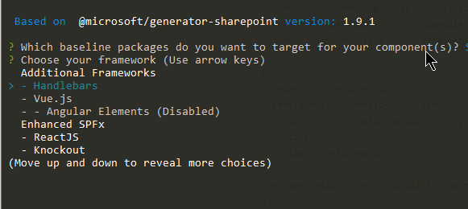
-
假設看到 Angular Elements 是 Disabled 狀態時，這是因為安裝的
@angular/cli版本沒有落在@pnp/generator-spfx內所設定的@angular/cli版本，這裡需要手動去改一下程式，修改步驟如下 -
windows 版可以到
%UserProfile%\AppData\Roaming\npm\node_modules\@pnp\generator-spfx資料夾下，修改以下檔案-
app/promptConfig.js，約 第19 行的地方，新增|| ngVersion.version.startsWith('9')1
2
3
4
5
6
7
8
9
10// support for Angular 6/7/8
if (ngVersion.version.startsWith('6') ||
ngVersion.version.startsWith('7') ||
ngVersion.version.startsWith('8') ||
ngVersion.version.startsWith('9')) {
angularVersion = ` (uses @angular/cli ${ ngVersion.version})`;
return false;
}; -
generators/angularelements/index.js約第 83 行的地方，新增|| ngVersion.version.startsWith('9')，記得要將第二段的條件用小括弧包起來1
2
3
4
5if (ngVersion.version !== undefined &&
(ngVersion.version.startsWith("8")||
ngVersion.version.startsWith('9'))) {
...
}
-
-
完成後，重新執行步驟二，執行
yo，就可以看到 Angular Elements 被開啟了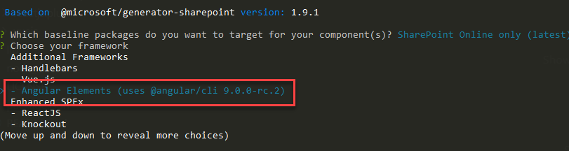
-
-
選擇是否安裝其他 Library，預設 Enter 下一步
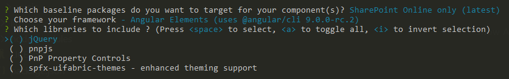
-
選擇 TypeScript 版本，我本身是喜歡越新版的 TypeScirpt 越好
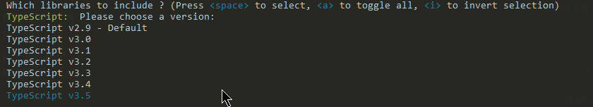
-
其他檢查套件安裝，直接 Enter 下一步
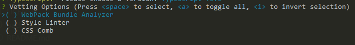
-
是否安裝 pipeline 設定，Enter 下一步
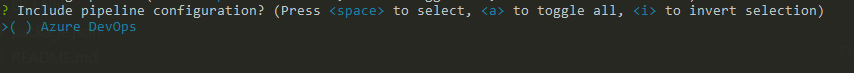
-
開始設定專案相關資訊，就依畫面上提示的輸入即可
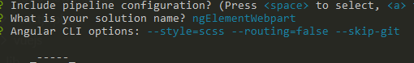
-
進入 SharePoint 專案的設定階段，基本上都是依文字說明選擇自己要的設定，但當第二個問題 Enter 下一步後，會停住
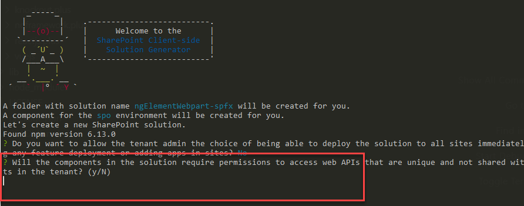
這邊理論上會問專案要建立在目前的資料夾呢，還是建立新的資料夾，不確定為什麼會空白，在多按一次 Enter 就會繼續往下走，而專案會建立在目前所在的資料夾內
-
選擇要建立的 component 類型，選擇
WebPart後 Enter 下一步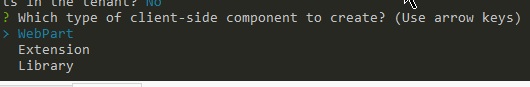
-
輸入
WebPart的名稱等相關資訊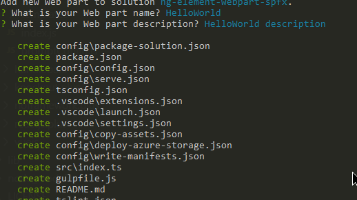
-
接下來就是漫長的安裝過程
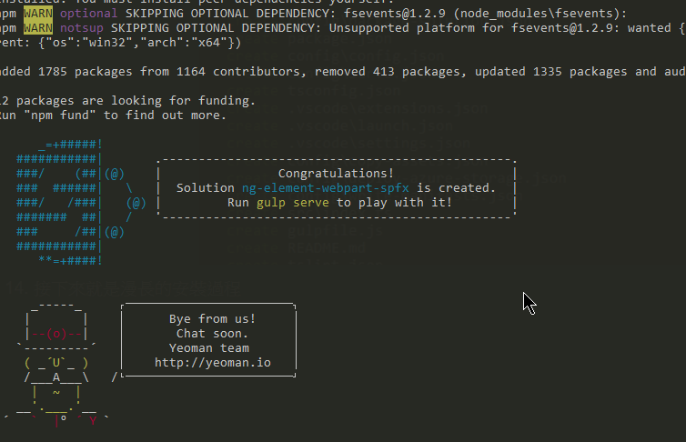
-
完成後，可以檢視目前的資料夾，會有兩個資料夾，一個是 Angular 專案，一個是 SPFx 專案。
-
最後，如果從沒有安裝過開發憑證，可先進入 SPFx 專案資料夾內，執行
gulp trust-dev-cert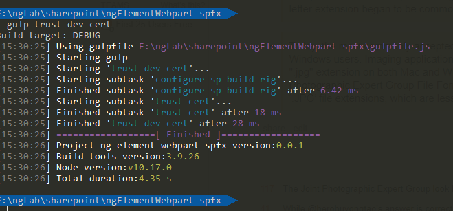
-
測試是否有安裝成功，需要執行以下兩個步驟
-
進入 Angular 專案資料夾，執行
npm run bundle指令 -
進入 SPFx 專案資料夾，執行
gulp serve，看看是否能正常地啟動起測試用的網頁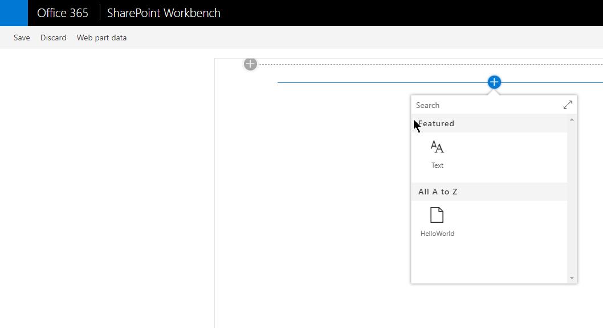
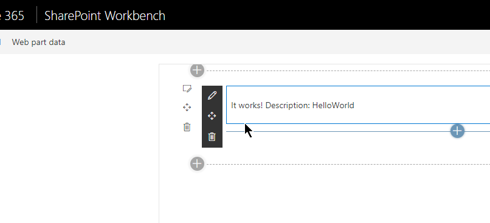
能看到這些畫面，就代表環境及專案都建立成功了，就可以往下一階段進行了
-
程式碼架構
Angular 專案
採用 Angular Element 的方式來完成，所以在 app.module.ts 的地方可以看到註冊 custom Element 的程式碼
1 | import { BrowserModule } from '@angular/platform-browser'; |
- Component 本身的 Selector 只會在 Angular 內部環境生效，對外是吃 customElements 這邊定義的名稱
- 如果是 Angular CLI 的版本，第 15 行的
entryComponents可以不用在寫了 (可移除)
SPFx 專案
src/webparts/helloWorld 資料夾內是我們要看的部分
webpart
HelloWorldWebPart.ts
1 | import "ng-element-webpart/dist/ngElementWebpart/bundle"; // 引用 Angular 建置 bundle 出來的檔案 |
render是用來顯示 WebParts 畫面的方法
另外一種寫法
1 | export default class HelloWorldWebPart extends BaseClientSideWebPart< |
WebParts 屬性的設定
1 | export default class HelloWorldWebPart extends BaseClientSideWebPart< |
- 這邊程式碼的寫法有支援 i18n 多國語系，要搭配 loc 資料夾內的檔案一起看，有興趣的可以去對應一下
manifest.json
-
HelloWorldWebPart.manifest.jsonWebPart 在 SharePoint 內要顯示的資訊設定檔1
2
3
4
5
6
7
8
9
10
11
12
13
14
15...
"preconfiguredEntries": [
{
"groupId": "5c03119e-3074-46fd-976b-c60198311f70", // Other
"group": { "default": "Other" },
"title": { "default": "HelloWorld-2" }, // 顯示在 WebParts 清單內的名稱
"description": { "default": "HelloWorld description" },
"officeFabricIconFontName": "Page",
"properties": {
"description": "HelloWorld-2" // 屬性預設值
}
}
]